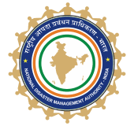
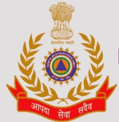
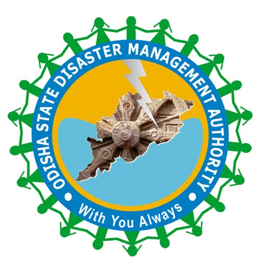

Disaster management plays a crucial role in protecting lives, safeguarding infrastructure, and promoting sustainable development.
Here are several key reasons why disaster management is important:
Effective disaster management helps minimize casualties by providing timely warnings, evacuation procedures, and emergency response services during disasters. It ensures that people are prepared to cope with emergencies, reducing the loss of life.
Disasters can cause significant damage to infrastructure, homes, businesses, and agriculture, leading to economic setbacks. Disaster management aims to mitigate these losses by implementing measures to strengthen infrastructure, enhance resilience, and promote risk reduction strategies.
By identifying and addressing vulnerabilities in infrastructure and critical facilities, disaster management efforts help protect essential services such as transportation, communication, water supply, and energy distribution networks.
Integrating disaster risk reduction into development planning promotes sustainable development practices. By considering disaster risks in land use planning, building codes, and environmental management, communities can reduce vulnerability and enhance resilience to disasters.
Disaster management includes planning for business continuity and ensuring the uninterrupted delivery of essential services such as healthcare, education, and public safety during and after disasters.
Disaster management fosters community resilience by empowering individuals, communities, and organizations to prepare for, respond to, and recover from disasters. It strengthens social cohesion, fosters collaboration, and builds trust among stakeholders.
Disasters can have significant environmental impacts, including pollution, habitat destruction, and ecosystem degradation. Disaster management promotes environmentally sustainable practices and integrates environmental considerations into disaster risk reduction efforts.
Climate change is exacerbating the frequency and intensity of many types of disasters, including hurricanes, floods, droughts, and wildfires. Disaster management strategies incorporate climate adaptation measures to address these challenges effectively.
Comprehensive disaster management plans and protocols enable coordinated and effective responses to emergencies, facilitating rapid recovery and rehabilitation efforts in affected areas.
Disaster management fosters collaboration and cooperation among national governments, local authorities, civil society organizations, and international agencies. Sharing knowledge, resources, and expertise enhances collective resilience and strengthens global responses to disasters.
In summary, disaster management is essential for saving lives, reducing economic losses, promoting sustainable development, enhancing community resilience, protecting the environment, addressing climate change challenges, ensuring continuity of services, and fostering cooperation at national and international levels. Investing in disaster management not only mitigates risks but also contributes to building safer, more resilient, and sustainable societies.
The NDMA is the apex body for disaster management in India, responsible for formulating policies, plans, and guidelines for disaster management.
It coordinates response efforts during disasters and assists states and Union Territories in their disaster management activities.
NDMA works to build capacity at various levels and promotes research and development in disaster management.

The NDRF is a specialized force established for the purpose of disaster response, rescue, relief, and recovery operations.
It operates under the NDMA and is responsible for providing specialized assistance during disasters such as earthquakes, floods, cyclones, and other natural or man-made disasters.
NDRF teams are strategically located across the country for quick deployment during emergencies.

NIDM is an apex national institute for training and capacity development in disaster management.
It conducts training programs, workshops, research, and documentation in various aspects of disaster management.
NIDM serves as a resource center for sharing knowledge and best practices in disaster risk reduction and management.
SDMA is established at the state level to oversee and coordinate disaster management efforts within the respective state.
It formulates state-level policies and plans for disaster preparedness, response, and recovery.
SDMAs work closely with other state agencies, district administrations, and community organizations to enhance disaster resilience.
Odisha State Disaster Management Authority is an agency of the Department of Revenue & Disaster Management whose primary purpose is to carry out responses to natural or man-made disasters and for capacity-building in disaster resiliency and crisis response.
It was established as the Odisha State Disaster Mitigation Authority by a resolution of the Department of Finance of the Government of Odisha on 28 December 1999, as a response to the death toll and damage caused by a 1999 supercyclone.
